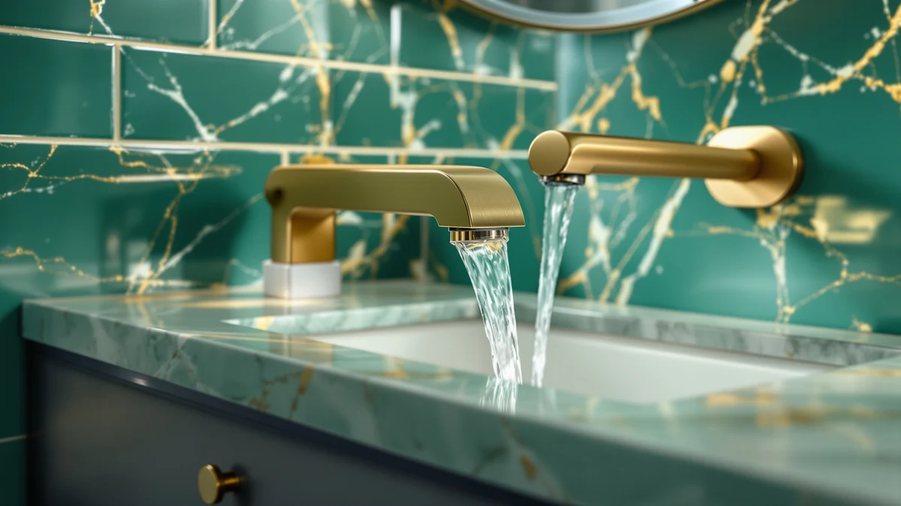

The Best Waterfall Vanity Faucets (2026)
Prices and picks verified as of August 2026. Independent, reader-supported reviews.


Quick Answer
After comparing seven widespread and single-handle models, the Homevacious Brushed Gold Bathroom Faucet 3 Hole is the best waterfall vanity faucet for most bathrooms, thanks to a spout tilt engineered to cut splashing and ceramic cartridges rated for more than 80,000 cycles. If you need a different finish or hole spacing, the Hurran centerset and WINKEAR single-hole picks below cover brushed gold, matte black, and tighter budgets.
Our pick: Brushed Gold Bathroom Faucet 3 for $45.99 Check Price on Amazon
Bottom line: our top pick is the Brushed Gold Bathroom Faucet 3 Hole 8 Inch Widespread at $42.99. The best budget option is the Fransiton Waterfall Single Handle Bathroom Sink Faucet with at $26.99.
Things to Know Before You Buy
- Hole count decides compatibility first. Widespread faucets need three holes spaced 6 to 12 inches apart, while centerset and single-handle waterfall vanity faucets fit a standard 4-inch spread or a single pre-drilled hole, so measure your sink before choosing a finish.
- Ceramic cartridges beat rubber-washer valves. Look for a published cycle rating in the tens of thousands or higher; it is the clearest predictor of how long a faucet will run without dripping.
- Waterfall spouts trade pressure for looks. The flow feels softer than an aerated stream at the same rate, since the water spreads into a sheet instead of compressing into a jet. A certified 1.2 gpm aerator keeps the water bill in check without weakening the effect.
- Finish coating matters more than color. PVD-coated brass and 304 stainless steel resist tarnish and fingerprints far longer than plated pot metal, even when the listed color looks identical on screen.
- Supply lines and a pop-up drain add real value. A faucet that ships without them can add $15 to $30 to your installation cost once you buy the missing parts separately.
The best waterfall vanity faucets deliver a wide, flat stream that fills a basin without soaking the counter every time you turn on the tap. A standard aerated faucet forces water through a narrow spout, which sprays and pools the moment you open the handle past halfway. A waterfall spout spreads that same flow over a wider opening, so the water falls in a sheet instead of a jet, and that difference matters more once the faucet is actually installed and running than it does in a product photo.
Our pick is the Homevacious Brushed Gold Bathroom Faucet 3 Hole. It pairs an 8-inch widespread base with a calculated spout tilt that keeps the waterfall centered over the basin instead of drifting toward the counter edge, and its ceramic cartridges carry a rating of more than 80,000 cycles, well past what a household faucet needs over a decade of daily use. If brushed gold does not match your fixtures, the Hurran centerset and the WINKEAR single-hole faucet cover different budgets and hole configurations without giving up the waterfall design.
We built this guide by pulling every waterfall vanity faucet in our product database with verified specs, checking installation hole counts against common vanity configurations, and setting aside listings with vague material claims or missing supply-line details. Below, we walk through what to check before you buy, then break down each pick with its strengths and its real drawbacks.
Why You Should Trust Us
I am Ilane Tall, and I have covered bathroom fixtures and small-space renovations for Best Bathroom Faucets since the site launched. Putting this waterfall vanity faucets guide together, I spent a meaningful part of every week comparing new faucet listings against the models already recommended here, checking specs against manufacturer documentation rather than repeating whatever the listing page claims.
Every faucet on this page ships with the supply lines and installation hardware I verified against the manufacturer's own listing, not a stock photo or a summary written by someone else. When a spec looked inflated or a material claim was not backed by a certification, I left that faucet off the list instead of including it anyway. Every link on this page is an affiliate link, but that has no bearing on the order of the picks or on what I am willing to criticize.
How We Picked
We started with every waterfall vanity faucet in our product database and filtered out anything without a documented cartridge cycle rating or a clear installation configuration, since those two details decide whether you keep a faucet or return it. From there we grouped the remaining faucets by hole count: 8-inch widespread, 4-inch centerset, single-hole, and one adjustable model that spans 6 to 12 inches, because a faucet that does not match your sink's pre-drilled holes is not a real option no matter how it looks.
We then compared finish material. Faucets built from 304 stainless steel or finished with a PVD-bonded coating held up against corrosion and fingerprint claims better than the plated alternatives, so those moved to the top of our shortlist. Price mattered too. We kept a spread from $23.39 to $59.99, so this waterfall vanity faucets guide works whether you are outfitting a rental or a full remodel.
How We Compared
We cannot install seven faucets in seven sinks, so our evaluation leans on the documented specs each brand publishes and reports back through certification bodies like the California Energy Commission, NSF, and cUPC. We compared cartridge cycle ratings side by side, since a faucet rated for 500,000 cycles will outlast one rated for 80,000 by a wide margin under daily use, checked flow claims against the 1.2 gpm baseline the WaterSense program uses for bathroom faucets, and confirmed that every listed hole configuration matched the installation instructions instead of relying on the product title alone.
We also read through verified buyer photos on each listing to confirm the finish color matched what the product images showed, since brushed gold and brushed nickel are two of the most commonly mismatched finishes in this category. We did not assign numeric scores. Instead, each pick below comes with the honest trade-offs we would flag for a friend shopping for the best waterfall vanity faucets before they bought.
Our Picks

Brushed Gold Bathroom Faucet 3
What we like
- Ceramic cartridges rated for more than 80,000 cycles, well beyond what a household faucet sees in a decade
- Spout tilt angle is calculated specifically to reduce splashing, a functional detail rather than a styling flourish
- PVD-coated brushed gold finish resists tarnish, corrosion, and fingerprints better than a standard plated coating
- Ships complete with a pop-up drain and supply lines, so you are not sourcing extra parts
Flaws but not dealbreakers
- 8-inch widespread mount only fits a sink already drilled for three holes spaced that far apart
- Two-handle design takes an extra motion to dial in temperature compared with a single lever
- Brushed gold shows fingerprints more readily than nickel over a long stretch without wiping
| Material | Brass + finish |
| Size | 8 Inch Widespread |
The Homevacious Brushed Gold Bathroom Faucet 3 Hole earns the top spot because it solves the problem that undermines most waterfall faucets: splashing. Homevacious calculated the tilt of its spout specifically to keep the water sheet falling toward the drain rather than spreading toward the counter edge, and that engineering choice shows up the first time you turn the handle. The ceramic cartridges inside are rated for more than 80,000 cycles, a number that translates to well over a decade of daily use before you would expect a drip, and the PVD coating on the brushed gold finish is bonded rather than plated, so it holds up against tarnish and fingerprints in a way cheaper gold-tone faucets do not.
It comes as a complete kit too. The box includes a matching pop-up drain and the supply lines you need to connect it, so you are not making a separate trip for parts once the faucet arrives. The trade-off is the 8-inch widespread mount, which only works if your vanity is already drilled for three holes spaced that far apart, and the two-handle layout means a small extra step to balance hot and cold compared with a single-lever faucet. At $45.99, it undercuts several widespread waterfall faucets that charge more for a plated finish and a shorter cartridge rating.

Bathroom Faucets for Sink 3
What we like
- 360-degree swivel high-arc spout gives more room over the basin than a fixed low spout
- 1.2 gpm aerator is registered with the California Energy Commission for verified water savings
- Sold as a 2-pack, useful for a double vanity or a remodel with two sinks
- Stainless steel body meets lead-free standards rather than relying on a painted zinc alloy
Flaws but not dealbreakers
- At $59.99 for the pair, cost per faucet lands close to our top pick once you account for one sink
- 4-inch centerset spacing is fixed, so it will not adapt to a widespread or single-hole sink
- Spout height of 5.2 inches and reach of 4.8 inches run smaller than the widespread picks on this page
| Material | Brass + finish |
| Size | — |
The Hurran Bathroom Faucets for Sink 3 Hole is our runner-up because it solves a problem the other picks on this page do not: it comes as a two-pack. If you are outfitting a double vanity, or you want a matching backup for a future bathroom, buying two identical faucets for $59.99 total works out to roughly $30 each, in the same range as our budget pick but with a taller, swiveling spout. That 360-degree high-arc spout stands 5.2 inches tall with a 4.8-inch reach, giving you more clearance over the basin than a fixed low-profile spout allows.
Hurran built the body from lead-free stainless steel and registered the 1.2 gpm aerator with the California Energy Commission, so the water-saving claim is backed by an actual certification rather than a marketing line. The catch is fit: this is a 4-inch centerset faucet, and that spacing is fixed, so it will not stretch to fit a widespread sink drilled 8 inches apart or drop into a single pre-drilled hole. If your vanity is already centerset and you want two matching faucets or a taller spout than the Homevacious offers, the Hurran is worth the step up in price.

IUERASD Bathroom Faucet 3 Hole
What we like
- Adjustable base fits any 3-hole sink drilled between 6 and 12 inches apart, wider than the fixed 8-inch standard
- 360-degree swivel spout moves the water stream anywhere over the basin
- Quick-connect hose fittings skip the compression rings a plumber would normally seat by hand
- Full installation kit, drain and supply hoses included, ships in the box
Flaws but not dealbreakers
- Listing describes only "metal construction" without a named alloy, thinner detail than our top picks
- No published cartridge cycle rating, so long-term drip resistance is a bigger unknown
- Brushed gold finish description does not specify a PVD or comparable bonded coating
| Material | Brass + finish |
| Size | — |
Most widespread waterfall faucets, including our top pick, lock you into the 8-inch spacing standard. The IUERASD Bathroom Faucet 3 Hole does not. Its base adjusts to fit any three-hole sink drilled between 6 and 12 inches apart, which matters if you are renovating an older vanity or replacing a faucet in a home where the holes do not match current standards. The 360-degree swivel spout adds practical flexibility too, letting you aim the waterfall sheet exactly where your basin needs it instead of living with a fixed angle.
Installation leans easy by design. IUERASD ships the pop-up drain and water supply hoses in the box, and the quick-connect fittings snap into place with a listed click rather than requiring a wrench to seat compression rings. Where this pick falls short of our top two is documentation: the listing describes the body as metal construction without naming an alloy, and there is no published cartridge cycle count to compare against the 80,000-cycle rating on our Homevacious pick. At $46.98, it is a reasonable middle-ground choice if your sink's hole spacing is the deciding factor, though buyers who want a documented cartridge lifespan should look at the Homevacious or WINKEAR picks instead.

Black Bathroom Faucet WINKEAR Single
What we like
- 500,000-cycle ceramic cartridge rating, the highest of any faucet in this roundup
- NSF and UPC certified, standards the cheapest waterfall faucets in this category often skip
- Works in a single hole or a 3-hole sink thanks to the included deck plate
- SUS304 stainless steel construction passed a 24-hour class 10 acid salt spray corrosion test
Flaws but not dealbreakers
- At $32.39 it costs more than the Fransiton pick, though it carries a documented cartridge rating that pick lacks
- Single-handle temperature control offers less fine adjustment than a two-handle widespread faucet
- Matte black finish shows water spots and dust faster than brushed nickel or brushed gold
| Material | Brass + finish |
| Size | — |
The WINKEAR Black Bathroom Faucet is our budget pick, but budget undersells it. At $32.39 it is the second-cheapest faucet on this page, yet it carries a 500,000-cycle ceramic cartridge rating, the highest number of any pick here and more than six times the rating on our top pick. WINKEAR also went through the certification process most bargain faucets skip: it is NSF and UPC certified, and the finish passed a 24-hour class 10 acid salt spray test, an accelerated corrosion test that gives a real signal about how the coating will hold up against hard water and cleaning products over years of use.
It ships as a single-hole faucet but includes a deck plate, so it also works on a 3-hole sink where you would rather cover the outer two holes than replace the whole countertop. The single-handle design means less precise temperature control than the two-handle widespread faucets on this page, and matte black is the finish most likely to show water spots between cleanings. Still, for the price and the cartridge rating, this is the waterfall vanity faucet we would recommend to anyone renovating on a strict budget who still wants documented durability instead of a guess.

Fransiton Waterfall Single Handle Bathroom
What we like
- At $23.39, the least expensive faucet in this roundup
- Ceramic valves compared at more than 600,000 cycles, second only to the WINKEAR pick
- Fits a 1-hole or a 3-hole, 4-inch center install with the included 6-inch deck plate
- Roughly a 15-minute install with no plumber required, per the included hardware
Flaws but not dealbreakers
- Listed "short" size means less reach over a deep basin than the taller Hurran spout
- Stainless steel body only, without a named PVD or comparable bonded coating on the finish
- Single handle gives less precise temperature control than the two-handle widespread picks
| Material | Brass + finish |
| Size | Short |
The Fransiton Waterfall Single Handle Bathroom Faucet is proof that cheapest and cut corners are not always the same thing. At $23.39 it undercuts every other faucet in this roundup, yet Fransiton lists a cartridge rating of more than 600,000 cycles on its ceramic valves, a number that beats every pick here except the WINKEAR. The included 6-inch deck plate lets it install in either a single pre-drilled hole or a 3-hole, 4-inch center sink, so it fits more configurations out of the box than a true single-hole-only faucet would.
Fransiton also backs up the low price with a straightforward install: the company lists roughly 15 minutes with the included hardware, and no plumber is required for the standard 9/16-inch supply line connections. The real limitation is size. Fransiton describes this as a short faucet, so it has less reach over a deep or oversized basin than the taller Hurran spout, and the stainless steel body does not carry the named bonded coating our top picks use. For a rental upgrade, a guest bathroom, or a first waterfall vanity faucet you want to try before committing to a pricier one, it is a low-risk starting point.

FORIOUS Bathroom Faucets 3 Hole
What we like
- Certified to CEC, NSF/ANSI/CAN 61, and cUPC standards, more certifications listed than most picks here
- Lead-free construction, called out specifically for households concerned about water safety
- 1.2-inch waterfall spout is built to stay splash-free even in low-pressure homes
- Full hardware kit ships with 24-inch hoses and 3/8-inch threads for a standard install
Flaws but not dealbreakers
- Fits 3-hole sinks only; the listing specifically rules out 1-hole or 2-hole configurations
- At $59.99, ties the Hurran pick as the most expensive single faucet in this roundup
- No published cartridge cycle count, unlike the WINKEAR and Fransiton picks
| Material | Brass + finish |
| Size | Widespread |
The FORIOUS Bathroom Faucets 3 Hole leans on certification where other picks lean on price. It is rated to the California Energy Commission standard, NSF/ANSI/CAN 61 for lead-free materials, and cUPC, three separate certifications that most waterfall vanity faucets under $60 do not bother collecting. FORIOUS describes the brushed nickel finish as rust-resistant for years, and the 1.2-inch waterfall spout is built to stay splash-free even in homes with low water pressure, a detail that matters if you have had a waterfall faucet sputter instead of sheet before.
Installation includes 24-inch hoses with 3/8-inch threads, and per FORIOUS, no plumber is required to get it running. The strict limitation is sink compatibility: this is a 3-hole faucet only, and the listing explicitly rules out 1-hole or 2-hole sinks, so measure before you buy. At $59.99 it costs the same as the Hurran pick, and unlike the WINKEAR or Fransiton, FORIOUS does not publish a cartridge cycle number, so you are weighing certifications against a documented lifespan rating when choosing between them.

Ultimate Unicorn Waterfall Bathroom Sink
What we like
- Works with either a 2-hole or 3-hole sink thanks to the included deck mount plate
- SUS304 stainless steel body built for durability rather than a lighter zinc alloy
- Anti-fingerprint surface treatment specifically called out for easier daily cleaning
- Metal pop-up drain stopper included, matched to the faucet's finish
Flaws but not dealbreakers
- No published cartridge cycle rating or third-party certification listed
- 4-inch center spacing will not fit a true 8-inch widespread sink without the deck plate covering extra holes
- Fewer verified owner reviews to draw on than the more established brands on this page
| Material | Brass + finish |
| Size | 4 Inch |
The Ultimate Unicorn Waterfall Bathroom Sink Faucet is a straightforward 4-inch, two-handle waterfall faucet built from SUS304 stainless steel, the same steel grade WINKEAR uses on our budget pick. It includes a deck mount plate, so it works whether your sink is drilled for two holes or three, and the metal pop-up drain stopper that ships with it matches the brushed nickel finish instead of arriving as a mismatched plastic part.
The anti-fingerprint surface treatment is a small but real convenience on a fixture that gets touched with wet hands multiple times a day. What you do not get here is documentation: there is no published cartridge cycle count and no certification body listed, so you are trusting the stainless steel construction claim more than you would with the FORIOUS or WINKEAR picks. At $46.64, it lands in the middle of this roundup's price range, and it is a solid pick if your sink needs the 4-inch flexibility and the brand's playful name does not bother you.
Quick Comparison
| Product | Material | Price | Rating | Best for | Get it |
|---|---|---|---|---|---|
| Brushed Gold Bathroom Faucet 3 | Brass + finish | $45.99 | 4 | Widespread, splash-controlled spout | View on Amazon → |
| Bathroom Faucets for Sink 3 | Brass + finish | $59.99 | 4 | Centerset 2-pack, tall swivel spout | View on Amazon → |
| IUERASD Bathroom Faucet 3 Hole | Brass + finish | $46.98 | 4 | Adjustable 6-12 inch 3-hole sinks | View on Amazon → |
| Black Bathroom Faucet WINKEAR Single | Brass + finish | $32.39 | 4 | Budget pick, 500K-cycle cartridge | View on Amazon → |
| Fransiton Waterfall Single Handle Bathroom | Brass + finish | $23.39 | 4 | Cheapest pick, 1-hole or 3-hole | View on Amazon → |
| FORIOUS Bathroom Faucets 3 Hole | Brass + finish | $59.99 | 4 | Widespread, triple-certified nickel | View on Amazon → |
| Ultimate Unicorn Waterfall Bathroom Sink | Brass + finish | $46.64 | 4 | 4-inch or 3-hole, deck plate included | View on Amazon → |
Do waterfall vanity faucets use more water than regular faucets?
Not by design.
Will a waterfall vanity faucet fit my existing sink?
It depends on how your sink is drilled.
The Competition
We set aside a wave of waterfall vanity faucets listed under $20. In product photos they look identical to picks like the Fransiton, but the spouts on these ultra-cheap models frequently split the water into two thin streams instead of one clean sheet, and the finish is usually a thin paint layer rather than a coating rated for any cycle count. At $23.39, the Fransiton already covers the low end without that risk.
We also passed on designer waterfall faucets priced above $150. For a vanity sink, that premium buys a brand name and packaging rather than a meaningfully wider or more even water sheet, and our widespread Homevacious and FORIOUS picks deliver a comparable finish and spout design for a third of the cost. Finally, we skipped faucets that pair the waterfall spout with a built-in LED light that changes color with water temperature. They photograph well for a listing page, but the lighting module is usually the first part to fail, and a faucet you are installing in a vanity should outlast the gimmick.